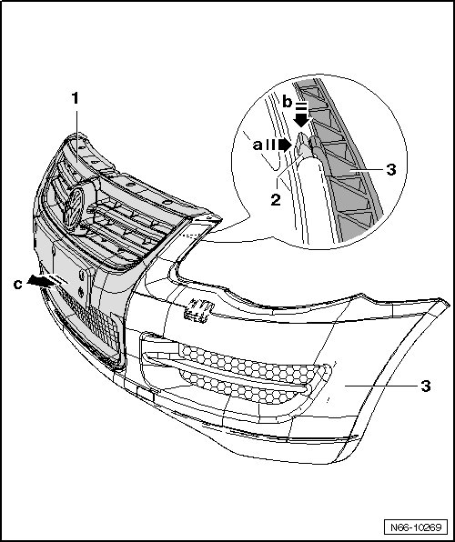

Radiator Grille, From 11.2006
Radiator Grille
Radiator Grille, from 11.2006
Removing

- Remove bumper, refer to --> [ Bumper Cover ]
- Press retaining hooks - 2 - out of retainers - arrow a - and then out of opening - arrow b - in bumper cover.
- Remove radiator grille - 1 - from bumper cover - 3 -.
Installing
- Press the hooks - 2 - firmly into the retainers inside the bumper cover - 3 -.
- Ensure retaining hooks are seated firmly in retainers - arrow a -.